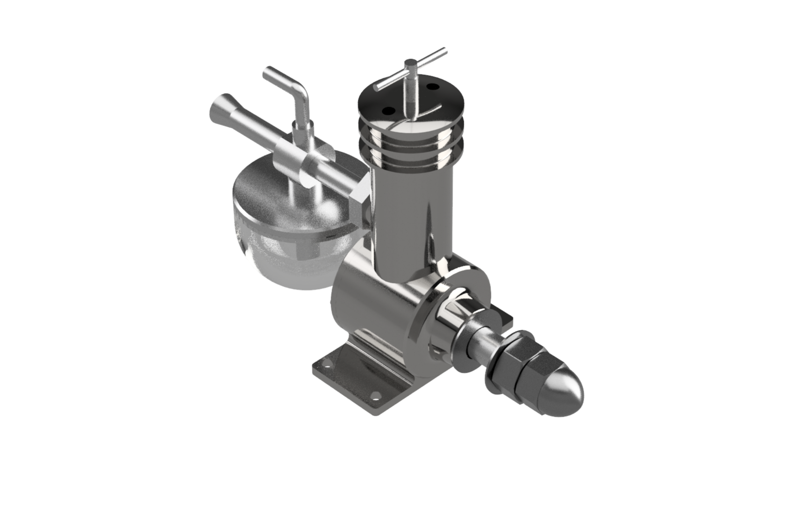
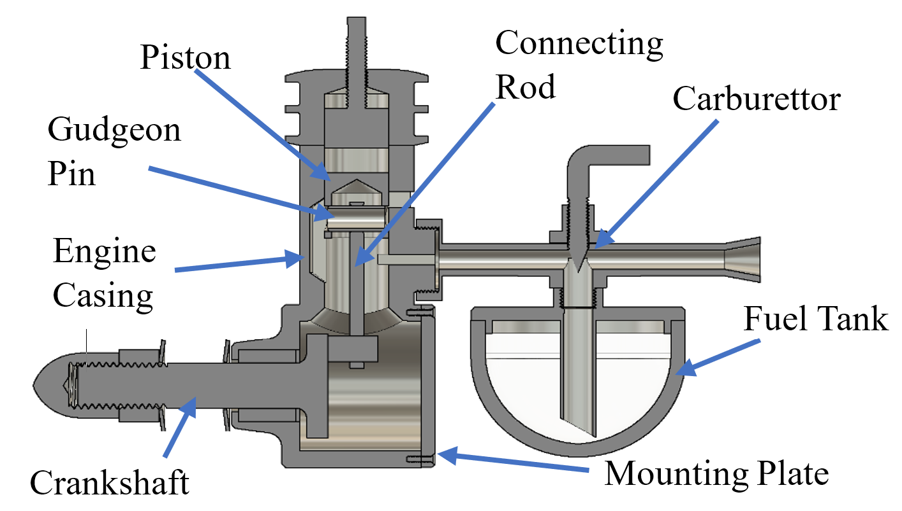
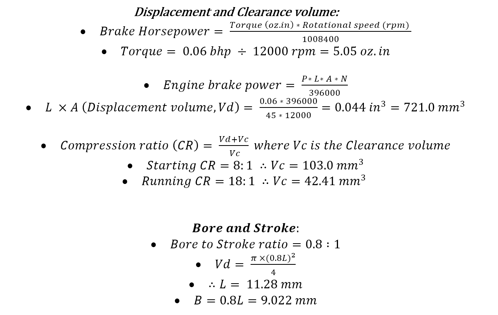
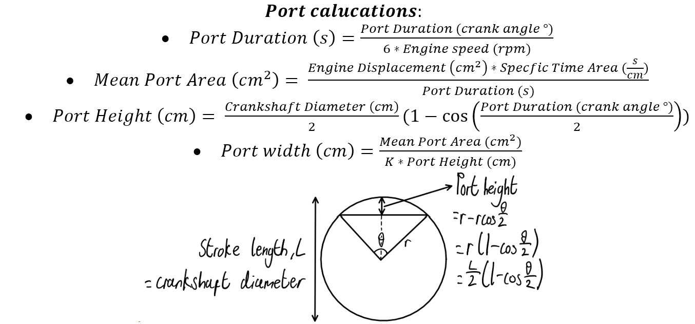
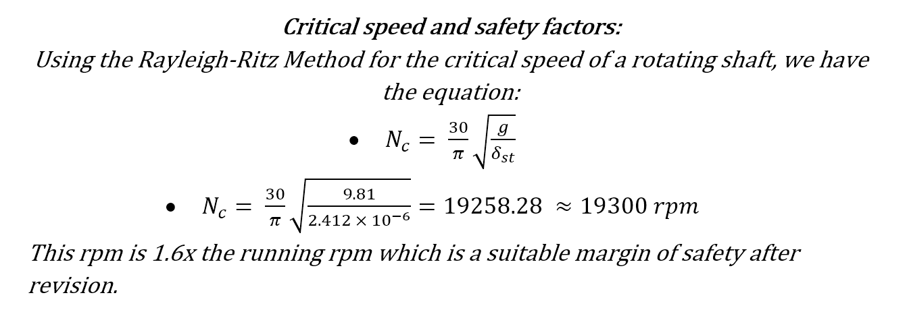
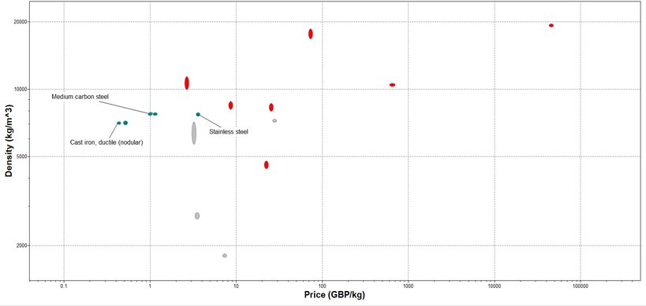
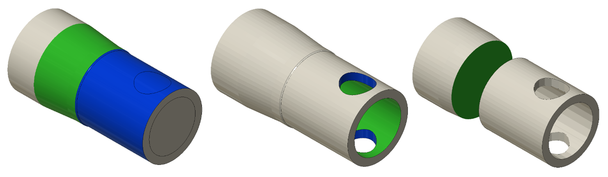
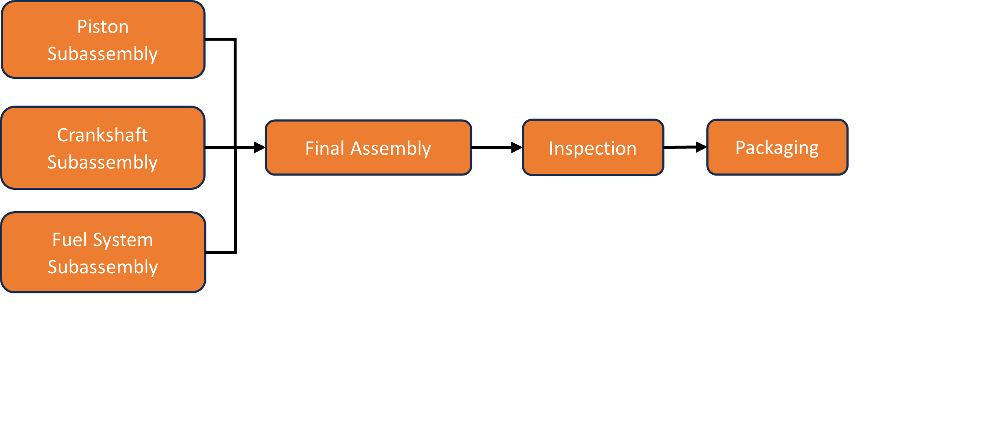

2023
Small-Scale Two-Stroke CI Engine
Designed and validated a single-cylinder, air-cooled, two-stroke compression ignition engine concept for a UAV, then translated the design into a manufacturable plan for 20,000 units.
Particulars

CAD Render of the Small-scale Engine
The brief
The brief was to design a compact two-stroke, compression ignition engine to power an unmanned aerial vehicle, meeting a minimum flight time requirement while staying air-cooled and manufacturable at scale. Key constraints included a target speed of 12,000 rpm, output around 45 W (0.06 bhp), and a production requirement of 20,000 units in 4 months.
What it had to do
How it worked
The engine architecture followed a traditional single-cylinder layout with piston, connecting rod, crankshaft, crankcase, cylinder head and a compact fuel system. The design also included a contra piston arrangement for the combustion chamber, plus standard fasteners and bearings to simplify assembly and servicing.

Design choices
Bore, Stroke & Compression
Bore and stroke were set to approximately 9.0 mm and 11.3 mm respectively to meet the bore-stroke ratio requirement. The design used a starting compression ratio of 8:1 and running compression ratio of 18:1, with clearance volumes calculated from displacement.

Porting Concept
Intake, exhaust, and transfer port timing and areas were sized from crank-angle durations, translating into target mean port areas and widths for the small displacement volume.

Rotordynamics: Critical Speed Margin
Whirl risk was checked by estimating shaft deflection and applying the Rayleigh-Ritz approach. The calculated critical speed was around 19,300 rpm, giving a margin of about 1.6× the operating speed.

Strength: Safety Factor
A combined loading check used a conservative yield assumption and the Tresca criterion, giving a lower-bound safety factor of about 2.3, with an upper bound around 3.46 if higher yield strength steel is assumed.
Manufacturing and materials
The project did not stop at CAD. We built a manufacturing plan tailored for volume production, defining primary and secondary processes for non-standard components, then justifying material choices based on stiffness, fatigue, thermal stability, machinability, and cost.
Material Selection Focus: Crankshaft
Using Granta EduPack, the crankshaft material was screened on Young's modulus, fatigue strength at 107 cycles, thermal expansion, density, and price. The final comparison considered stainless steel, cast iron, and medium carbon steel. Medium carbon steel was selected as it offered the best stiffness-to-cost balance with favourable fatigue strength and low thermal expansion.

High-Volume Manufacturing Plan
The casing and piston were specified as grey cast iron for thermal conductivity, vibration damping and machinability. Powertrain components such as the crankshaft, connecting rod and gudgeon pin were specified as medium carbon steel for strength and fatigue performance. The fuel tank was specified as polypropylene for injection moulding, chemical resistance, and transparency.
Process Breakdown: Example Components
We defined process routes for each non-standard part. Examples include:
- Piston: turning + drilling + deburring for a smooth sliding surface (cycle time reported around ~2 minutes).
- Connecting rod: CNC milling with reamed holes for fit and finish (cycle time reported around 1 min 44 s).
- Crankshaft: turning + milling + threading to hit fits and reduce deflection risk (cycle time reported around 1 min 44 s).
- Crankcase: gravity die casting followed by machining for contact surfaces and ports.

Assembly Planning
To reduce variability at scale, assembly was structured into subassemblies with simple jigs. A piston jig guided gudgeon pin insertion depth before pressing the pin fully with the connecting rod in place. A crankcase jig held the case during bearing and crankshaft insertion. The final assembly sequence was designed to be completed with minimal tooling.

CAM study
Alongside the manufacturing strategy, I produced a CAM routine for a small cylindrical component (piston-form factor) including roughing, finishing and drilling parameters, targeting tight tolerances and surface finish for low friction interfaces.
- Total manufacturing time reported: 2 min 15 s.
- Tolerance target: 0.01 mm.
- Surface finish targets referenced: Ra 0.4 μm (milling) and Ra 1.6 μm (drilling).
How it turned out
The outcome was a coherent engine concept supported by core validation calculations, plus a practical manufacturing and assembly plan that considered repeatability, cost, and scalability.